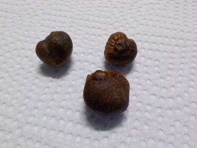
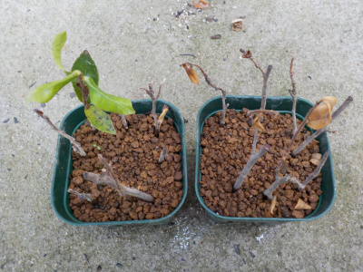
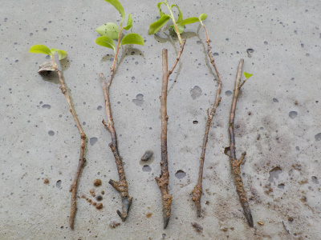
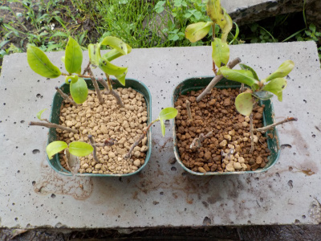
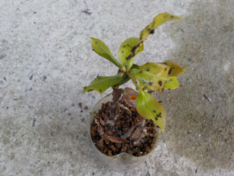
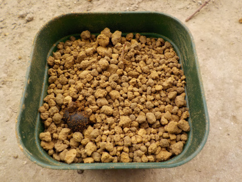
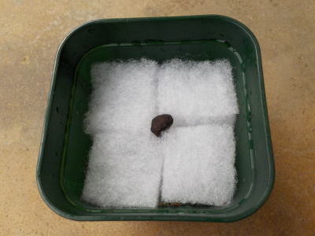
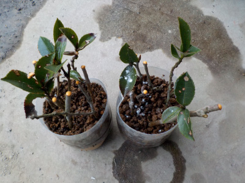
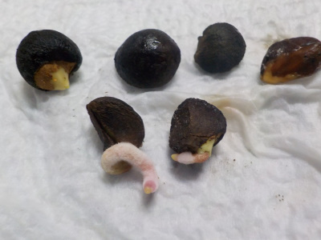
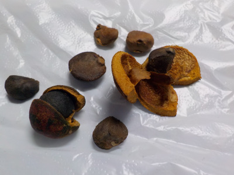

遊びで植物を育てよう
2020/11/08
白系のサザンカを増やしたかったので種を採りました。

採るのが遅かったみたいで3個だけしか見つけれませんでした。

花はこんな感じ。（昔の写真です。）
種なので同じ色の花が咲くとは限りませんが、白っぽい花が咲くでしょうと勝手に予想しています。
【サザンカTOP】
【木TOP】
【園芸TOP】
2020/11/01
サザンカが咲きだしました。

サザンカが咲いていました。
これからしばらくの間花が楽しめますね。
【サザンカTOP】
【木TOP】
【園芸TOP】
2020/07/04
ペットボトルの挿し木の威力は凄いですね。

ペットボトルの密閉空間の時はよく成長していたんですが、ペットボトルから出したらドンドン枯れだしました。
残ったのは1本だけです。
こうなるんだったら出さなければよかった。
ペットボトルの密閉挿しって効果が凄いんですね。
【サザンカTOP】
【木TOP】
【園芸TOP】
2020/06/14
サザンカの挿し木は発根していませんでした。

上に葉っぱが伸びていたので、てっきり発根しているものと思っていましたが根っこが確認出来ませんでした。

抜いてしまったものを元に戻す気になれなかったので、普通に小さな鉢に植えました。
今梅雨なので、普通に挿し木です。
【サザンカTOP】
【木TOP】
【園芸TOP】
2020/06/07
サザンカの挿し木にナメクジがいました。

密閉挿しなんですけど、私のペットノトルの挿し木は少し隙間があるので、そこからナメクジが入ったようです。
糞が沢山あるので、葉っぱが沢山食べられたかな。
ペットショップボトルの上まで木が伸びているので、来週には鉢を用意して植え替えしようと思います。
【サザンカTOP】
【木TOP】
【園芸TOP】
2020/04/18
サザンカを土に植え替えしました。

一鉢に２本入れました。
【サザンカTOP】
【木TOP】
【園芸TOP】
2020/03/14
サザンカをプラ鉢に移しました。

まだ根っこしか出ていないですが、根っこが大きいので移動しました。
早く葉っぱが見たいです。
【サザンカTOP】
【木TOP】
【園芸TOP】
2020/03/01
サザンカの挿し木をしました。

家にサザンカは何本かあるんですが、白い花は1本しかないので増やすことにしました。
この木は枝が細かったです。なんか弱そう。
葉っぱに付いてる白い点々はルートンです。今日は冷たい風が強かったので、作業が雑になりました。
【サザンカTOP】
【木TOP】
【園芸TOP】
2020/02/29
サザンカの根はピンク色でした。

ほんのりピンク色の根っこが出てくるとは思いませんでした。
なにげにちょっと気持ち悪い。
【サザンカTOP】
【木TOP】
【園芸TOP】
2019/11/30
サザンカの種を採りました。

花が綺麗に咲いてる時期ですが、まだ種が落ちずに残っていました。
今の時点で残ってる種ってどうなんでしょうね。順調には育っていないですよね。
試に蒔いて育ててみます。
【サザンカTOP】
【木TOP】
【園芸TOP】
種から木を育てます。
【おいしいものを食べよう。】【しっかり寝よう。】
【ソロ活をしよう!】【季節感のあることをしよう。】【動画視聴はほどほどに。】【当サイトの全てのコンテンツは無断転載禁止です。】